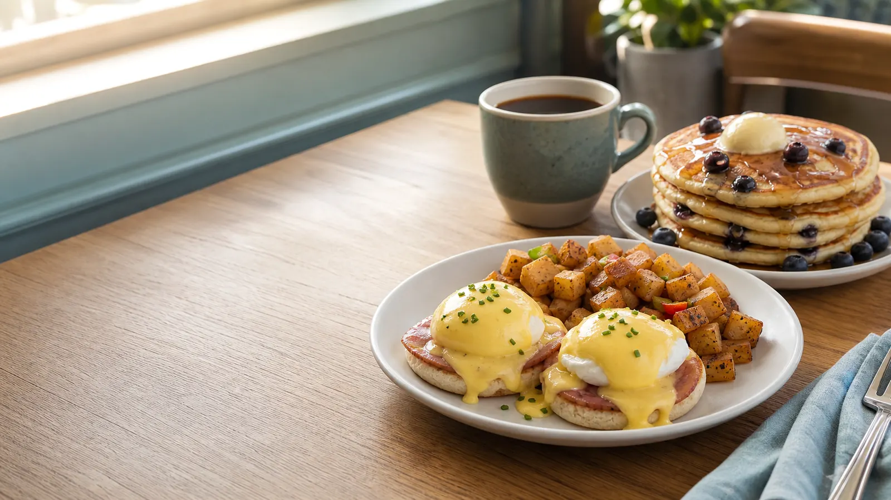
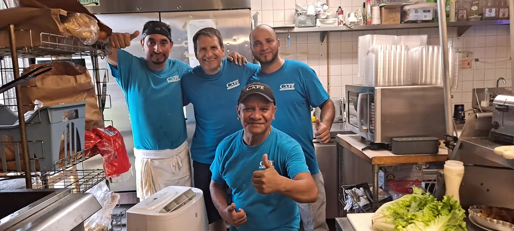
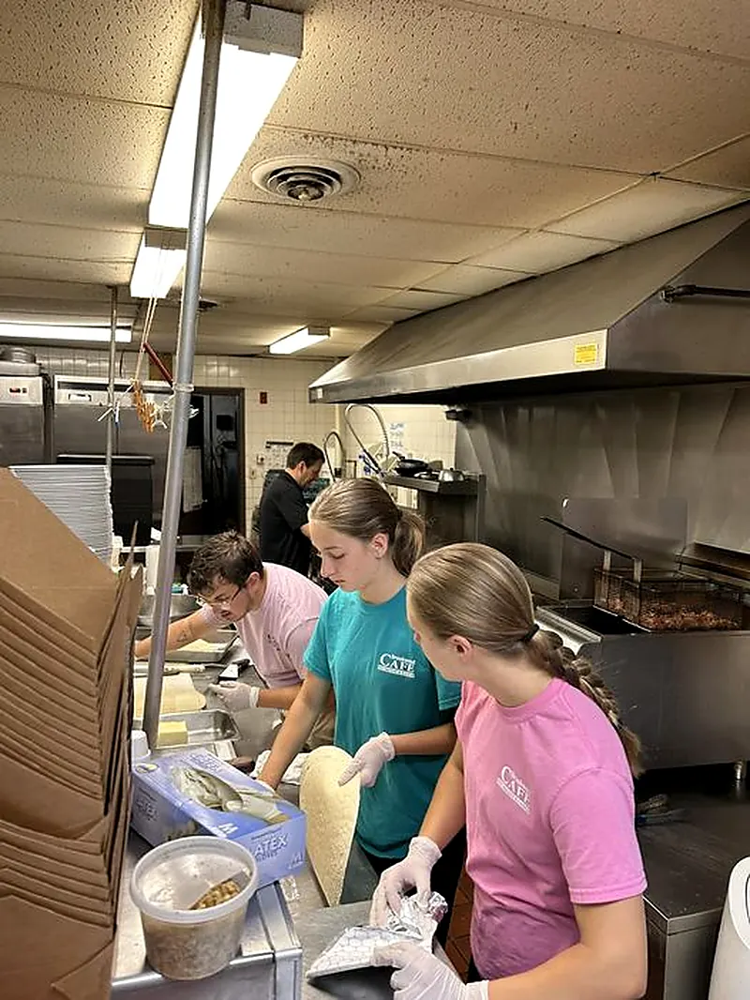

Traditional Eggs Benedict
One of seven Benedict choices on the current breakfast menu.
$15.25
Mercerville's neighborhood cafe
Breakfast, brunch and lunch made for the people around our table — every day, 8am–3pm.
Family · Friends · Food
Brookwood is a family-owned breakfast and lunch spot built around house recipes, local breads and pastries, homemade soups — and the belief that a cafe can help make its community better.
Come see us →

The kitchen is part of the story
Brookwood's kitchen has always made room for family, young helpers and the people who keep the neighborhood fed.
Hours
Breakfast, brunch and lunch — seven days a week.